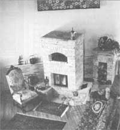

Fireplaces That Can Heat Your Home And Cook Your Meal
Fireplace designs, energy efficiency and the inner operatings of attractive home cooking and warming ovens.
By John Vivian
October/November 1994
Remember back in 1970-something when one of the Nixon daughters led a TV tour of the White House in steamy Washington, D.C., and innocently reported that "Daddy likes to turn up the airconditioning and have a fire in the fireplace"? Gasoline prices had just been oil-embargoed through the roof, taking home heating and cooling costs right along with them. For those of us who didn't have taxpayers to foot the bill, that off-the-cuff admission was particularly galling and further alienated the rebellious, draft age, newly environmentally sensitive 'Nam era American youth that I was at the time. Nearly everyone, even our esteemed leader, considered the living room fireplace more a source of entertainment than serious home heat. Well, he learned his lesson.
That's an almost forgotten and largely forgiven era. Richard is history. (Along with your squandered youth and mine - right, dear reader?) Besides, with the advent of wood-burning stoves in the late 1700s, the open fire that had warmed and cooked for mankind since the dawn of time was relegated to Boy Scout camp-outs. And the traditional fireplace/flue complex lost its utilitarian value and became a component of design and decor, a fixture in house architecture, an excuse for a mantle and a mirror or painting; it was no longer the home's central source of light, motion, and warmth.
Today, a typical fireplace has a low, deep firebox and large throat (the opening between firebox and flue) and is designed primarily to evacuate smoke, even when the fire is newly started. At a full, roaring blaze it radiates only 10% of the heat energy contained in its fuel out into the room - just enough to give the effect of a cozy, toe-warming fire and take the chill (natural or artificial) off a room. The rest of a fire log's rich concentration of sun-energy is lost up the flue. Along with the smoke goes (fossil fuel heated) room air that must be continually replaced by cold outside air, reducing the heating effectiveness of the fireplace and creating chilly drafts.
Fire in an Open Box
Very early American fireplaces, based on an English model unchanged since the Dark Ages, were primitive and inefficient - little but a hood with a pair of side jambs and a smoke hole located somewhere along the top. The flue damper wasn't invented till Ben Franklin dreamed it up in the mid-1700s. To keep warm air in and keep cold air from streaming down the flue and into the room, a cold fireplace was closed off with a not-very-effective stove board. Many colonial fireplaces consumed 10 or more cords of wood a winter. Householders stayed as warm as they could by bundling up, sitting on benches inside the huge walk-in kitchen fireplace (the "inglenooke" in Chaucerean Middle English), or huddling in front of a small parlor fireplace, benefiting only from the little heat that managed to radiate through the up-roaring draft that was being pulled in from behind them. People roasted in front and froze in back unless they wrapped in blankets or sat in high-backed settees.
An Earlier Energy Crisis
Ben Franklin knew that inefficient fireplaces made the colonies dependent upon English coal.
1700 to Present
It wasn't easy to experiment with heating appliance design in the early days. Each fireplace was a permanent installation requiring tons of masonry and a house. An experimental fireplace/flue combination that didn't work had to be torn down and re built... So, change was slow.
Early fireplace builders followed one rule: a small fireplace should be taller than wide, a large one wider than tall. So in colonial homes, you'll find big old walk-in cooking fireplaces filling most of the wall of a kitchen and smaller, high-backed heating fireplaces in other rooms. Fireplaces on second stories were smaller than those down below and used smaller vents into common flues, so as not to overpower first-floor fires that had farther to draw to exit the chimney. Still, each home owner or mason was his own expert; firebox dimensions and flues often followed inefficient, snaking paths through house walls. Fireplace-to-flue-openings and flues themselves were universally larger than efficiency would suggest. With smoke-detaining, rough walls, they had to host one or more chimney sweeps - small boys, for the most part, who were sent climbing up the whole length of the flue plying their brushes.
The fireplace was more than a heating and cooking appliance; it was and remains central to the design of the home. In warm southern climates, chimneys gravitated toward the end walls of the house - culminating in the classic brick double-ender with four flues serving fireplaces at corners or in end walls of the four main rooms on the ground floor and with smaller fireplaces in rooms above. In chilly New England, the farm home was built in stages. First was a one-room cabin with a combination cooking/heating fireplace making up most of one end wall. In step two, a second room - a mirror image of the first - was built with a second fireplace backing up to the first, and exhausted by a second flue. In stage three, a pair of rooms was built behind the first two, heated by warmth radiating from the heat sink formed by the brick of the fireplaces forming their interior walls. Finally, a third large, cooking fireplace with its own flue was added at the rear of the original dual flue and a lean-to summer kitchen addition was built on. A low second story was added, and small upstairs fireplaces were plugged into the original dual flues. Thus appeared the colonial center-chimney saltbox home with its characteristic broken roof line at the rear.
Settlers from Germany brought over the early iron-plate heat exchanger - a four-plate closed box protruding into the room and mortared into a flue located on an outside wall. The fire stove got its air and fuel from outside. The iron radiated heat into the room more effectively than brick, but unlike the English-style open fire, it did not afford a view of the flames or evacuate room air. Farmhouse rooms became stuffy (to put it politely), as many early homes backed onto the winter animal pens and the four-legged occupants contributed their unique body heat and odors to the home.
FRANKLIN'S CURE FOR SMOKY FIREPLACES
In addition to wasting phenomenal amounts of wood, early fireplaces smoked. Innovators reasoned that the fire would generate more heat and better draft if coals could be exposed, and as early as the 1300s, they were using andirons/hand-irons/firedogs to raise the fire and expose the hot coals on its underside to heat draft air. To keep coals from rolling out at night they invented half-circular fenders or fire fences. This reduced smoking marginally but also sent even more heat up the flues, wasting more wood.
All the world's scientists published treatises on curing the problem, including Ben Franklin in a letter of 1785, published in London in 1793. After determining that flue shape (other than being straight) was irrelevant, he listed possible causes and cures.
1. Too little draft air (now as then, especially troublesome in new, tight houses). Opening door or windows is a solution but risks unhealthy drafts; better is to crack top sash of window or hinge a pane to let cold air mix with hot air at ceiling. Best is to cut an opening in outside wall or floor to cellar to admit fresh air.
2. Fireplace openings too large - designed to match scale of room rather than heating efficiency. Relate size to height of flue with larger openings on first floor. Can reduce size with boards that lower lintel and/or reduce jamb width. Franklin felt that an 18"-square opening was right.
3. Competing fires fighting for draft. In the old days, short-flued upstairs fireplace lost to long-flued fire on first floor; today, a fireplace can overpower the weak exhaust of a gas water heater or a gas or oil furnace, drawing in lethal carbon monoxide.
4. Draft at flue mouth reduced by nearby hills, tall buildings, or trees causing air to blow down. Franklin used a wind vane to block downdraft. Flue can be lengthened with more brick, a length of stovepipe, or a tall ceramic "chimney pot."
5. Cold flue. Build flues in the middle of house instead of on cold outer walls. Install a damper to regulate draft and eliminate downdraft when flue is cold. As true today as 300 years ago.

Ben Franklin, an inventive but meddlesome little man, appreciated the efficiency of iron as a heat radiator but was worried that his German neighbors weren't getting enough healthy fresh air. He also fretted that rapidly depleting forests would make eastern seaboard cities even more dependent on England, the Colonies' source of coal - called "sea-coals" due to the long voyage from Europe. So in 1744 he wrote a pamphlet popularizing a "five-plate" cast-iron fireplace that could have functioned as a freestanding stove if stovepipe had been invented. It hadn't been and wasn't for another 16 years, so the "Pennsylvanian fireplace" was placed in front of a bricked-up fireplace and exhausted directly into the flue. It drew air through a pipe to the outside for combustion. Inside, the stove body had a looping smoke exit channel to retain smoke inside longer, as well as a four-celled room-air channel in back enabling a gravity flow of heated fresh air to circulate through the room. These are all features that are now incorporated in the finest new stove and fireplace designs today (see FRANKLIN'S CURE FOR SMOKY FIREPLACES for diagram). Franklin also devised the first damper - a sliding metal plate at the intersection of fireplace and flue (the throat) to regulate draft and close off a cold flue. In all, his inventions reduced the amount of fuel needed for heating a home by more than a half.
Doors and a rear smoke damper were added to Franklin's fireplace, and stovepipe came along in 1760 to allow the fireplace to be moved to a better heating location out in the room - and the modern stove was born. Now as then, variable draft openings in the door admitted primary oxygen, and openings in the stove body let in air to burn smoke. Together they admit just enough air to maintain the desired rate of burn/heat output while draft dampers in the exhaust system let out just enough hot air to maintain combustion and evacuate gasses. Fuel is consumed more slowly than in an open-draft fireplace and heat energy is kept in the room longer. It radiates out from all sides of the stove body and stovepipe and is conducted through the surrounding walls and furnishings, heating draft-free room air so it forms looping convection currents to carry the warmth to the far corners. An efficient stove can perform at almost the reverse ratio of a typical fireplace - up to 85% of heat energy is used and only 15% is lost in smoke.
Franklin's fireplace quickly evolved into thousands of designs, with models for heating and cooking, for homes, shops, factories, hospitals, restaurants, and railroad cars. Parlor stoves and kitchen ranges, with ornamental nickel plate decoration, became the height of style. By the 1700s, fireplaces were considered to be "old-fashioned" as heaters and - compared to ranges - positively archaic for the kitchen. Stoves had largely replaced fireplaces even in the country by about 1830, and coal-fired central heating plants began appearing by 1850 in towns. Most homes built between 1850 and the 1920s had no fireplaces at all, but freestanding chimneys built to service woodand coal-burning, space-heating stoves, kitchen ranges, or central heaters.
Fireplaces regained a measure of popularity beginning with the home building boom and beginning of the country-to-city migration in the 1920s. But they were built for amusement rather than serious heat. Fireplaces had simply become part of the decor.
That was when fuel oil cost a dime or two a gallon. Then came the 1970s oil crises and a sudden ten-fold increase in fuel prices. Home owners insulated and caulked and tried to heat with their living room fireplaces, but they found that rooms filled with smoke unless they cracked doors and windows to admit air to feed the fire - gaining cold drafts and losing most of the heat. The fireplaces also smoked if they tried to reduce heat loss by closing the damper part way or constricting the top of the chimney.
To the rescue came the first generation of the modern "airtight," wood-burning stoves, including units built to be inserted into existing recreational fireplaces. Attractive, fuel-efficient, and capable of pumping out vast amounts of heat, their popularity boomed. But they proved to release a particularly noxious smoke. Spurred on by activists to enforce the Clean Air Act, the EPA placed restrictions on wood stove emissions. The new "Government stoves" containing catalytic smoke combusters were cleaner by far, but more experienced wood burners disliked their blocky looks, wheezy performance, and high cost, prompting today's renewed interest in fireplaces. (For more details on the current - improving - state of wood- stove technology, see "1994 Wood Stove Update" )
How to Improve Fireplace Efficiency
There are several ways to make a fireplace approach the heat and fuel efficiency and emissions cleanliness of a modern stove. As fireplaces are free-breathing and unable to keep the air-starved fire that creates the creosote-loaded, sour, and "poison" smoke of an airtight stove, they are exempt from government meddling. So you can modify them any way you please. I'll discuss several things you can try - ranging from modifying the firebox of your living room wood waster to building a new thermal mass Russian-style fire stove.
The objectives are as follows: (1) to harvest as much energy from the live fire as possible; (2) to keep hot exhaust gasses inside the home as long as possible to transfer the maximum amount of heat to living areas; (3) to have a hot and fully oxygenated fire that will burn smoke, reducing creosote buildup in the flue and eliminating particulate emissions; and (4) to reduce the amount of heat lost up the flue to the minimum needed to remove combustion by-products.
The best mechanism for harvesting and retaining heat is a heat sink - a mass of ceramic or iron that will absorb heat energy and radiate it out into the home over time. There are two ways to transfer heat into a heat sink: (1) with a small, extremely hot, and well-oxygenated fire exhausting superheated smoke into a very effective heat sink; and (2) with a slow fire of hot embers that continually replenishes energy in a less effective heat sink.

Comparisons of Fireplace Designs.
Modern heat waster More efficient Rumford
An Efficient Burn
The illustration compares shapes of the conventional wood waster and the good heating design perfected by Count Rumford. Note that the modern firebox is low and well proportioned to modern, low ceiling rooms. But it is almost as deep as it is high. The cavernous firebox combined with a large smoke chamber will hold smoke till a cold flue begins to draw so the fireplace will smoke minimally - even at cold start. To make it a more effective heater, you need to make the firebox higher and more shallow, and narrow and broaden the throat to stretch across the whole breadth of the opening.
First of all, put your andirons aside till it's time to hang a spit on them to roast a haunch of beef. Originally intended to "raise the fire's skirts," exposing the coal bed under logs releasing more heat and improving the draft of smoky flues, they are now used to raise a newly set fire so you can shove paper underneath for quick and easy starts. Plan to build the same fire you use in your wood stove: a large ash bank holding live coals that you just place a new log over from time to time. The ashes will "bank" the heat of the coal bed so that new fuel burns hot but slowly from the bottom up, with only the faintest whisker of lacy white smoke flowing up the broad expanse of the fire back. Heat soaks into this ceramic heat sink to be released slowly into the living spaces.
A good heating fire never goes cold, but it seldom produces visible flame unless you stir it up to enjoy the fire. You let logs bum to coals each evening and "bank" the fire by covering it with ashes (you can half-bury a Yule log on top that will heat and dry but not burn). Heat retained by the brick and ashes will keep the room from chilling overnight. Come morning, you expose the coals to air (igniting the nicely dried Yule log in a room-warming "whoosh") and/or throw on a few shavings and enough kindling for a small blaze that is hot enough to kindle a bright fire between a pair of small logs. When the small stuff is burned to coals, throw on a larger log and keep feeding, one log at a time, until the next evening.
Ashes will just naturally migrate out front and to the sides of the fire - but there won't be a lot. Scrape out a scuttle or two each day and sprinkle on icy walks, scatter over the garden (I just toss it on the snow in the winter), or add to the compost.
Modify Carefully
If you're planning to sell your home, a permanant (mortared) fire back alteration might not be favored by the new owners.
Modifying a Conventional Firebox
Like to improve efficiency of the living room wood waster without tearing down the end wall of your house? Try making the firebox more shallow by stacking up firebrick to make a false back. You will be creating a larger heat sink (thermal mass) to absorb heat energy and radiate it gently out into the room after the fire has gone cold.
You'll need a hammer, a wide brick mason's chisel and 50 or so firebricks - standard size, but a dirty white color rather than brick red. If you plan to mortar the false back in place, buy a mason's trowel and the smallest sack of firebox mortar you can find. You can also try changing dimensions of the throat with thin sheet metal. Get a short roll of foot-wide aluminum flashing and a pair of tin snips.
First, use a shop vacuum and brush to clean ash and dust from the firebox. Then clean the existing firebrick so mortar will stick if you decide to make your changes permanent. Chip and wire-brush off what you can, then treat with muriatic acid to reveal clean brick for a solid mortar bond.
The false back will wall off about half your firebox and the fireplace will look peculiarly shallow at first. Formulate your own dimensions following Rumford's rules: The new firebox should be twice as deep as the existing lintel. This will appear way too shallow, I know, and you'll swear that it will never draw. But test it and see if it doesn't work. The best Rumfords I know have the hot ash bank sticking halfway into the room, but you never catch more than an occasional whiff of smoke. Make it deeper if you must.
Lay bricks 1-over-2, 2-over-1 (cutting bricks in half where you need shorts at alternating sides). Angle-cut brick at top and sides of the false back to mate smoothly with the existing top and side panels. Lay tie bricks front-to-back across horizontal courses in multiple tiers to stabilize the wall. Solid brick will make the best heat sink, but if your flue is on an outside wall, leave an airspace at the rear of the false back to insulate and help keep heat from being conducted outside and wasted.
Lay the false back dry (no mortar) and test and retest by burning small fires with the new fire back at various depths until you find the best compromise between draft, smoke removal, and heat. If you ever plan to sell the house, I wouldn't mortar the false back solidly to the bottom of the fireplace, as the next owner might not be as savvy as you at keeping a fire. Bed the wall in sand on the bottom and mortar it up freestanding, tacking to the firebox sides at the ends of each course. Plan to mix your mortar in small lots in a plastic bucket according to directions on the bag (it will be soupy and thin when it goes on and will seem chalky and weak when it dries, but it will harden and mature in the fire). Dip bricks in water quickly and let drip-dry before laying. Lay newspaper on the hearth to catch water and mortar drippings.
Before mortaring in your new firebox, experiment by narrowing the smoke exit with sheets of tin with slots of varying size cut in them and simply wedged for a friction/tension fit up in the mouth of the flue. Don't try to mortar the aluminum in; it will have to be removed to clean the flue and will become very sooty. Rather than try to clean it, you'll find it easier to snip out another. Making a permanent change in the damper plate of most fireplaces isn't possible without demolishing the whole thing. You may want to have a more sturdy metal throat plate made up and then try chipping out brick or drilling holes for stainless steel keeper pins so you can mortar it in place.
The Incense Test
To test your dry- laid false backs and throat modifications, first open the damper and heat the flue. Let the room heat rise - or if cool air persists in flowing down into the room, aim a hair dryer up into the smoke chamber (stuffing throat at each side of the dryer nozzle with old towels, if necessary, until the flue is warm enough that you can't smell creosote in the cool, falling air). Then, use punk, a lit cigarette, or an incense stick to generate smoke. Smoke should be drawn gently up into the flue from anywhere along the lintel. Once the fire has heated the firebox, you'll find that smoke will travel slowly but deliberately up the face of the fire back, and kind of trickle into the flue. The vast majority of the fire's heat will be absorbed by the fire back - to be gently radiated out into the room.
You'll also find that figuring out the correct combination of firebox dimension and throat size will take some trial and error, so don't get out the mortar and build that big ash bed until you are sure you've hit the correct dimensions.
If you have a strong back and want to try a quick fix, you can install a metal fire back - a black-iron plate with a bas-relief design, used in the old days to repair fire-damaged brick. They are sold by the country goods merchandisers that advertise in MOTHER. Or have a steel plate cut to approximate dimensions of the shallowed firebox. Laid in at a slant for trial - then mortared in - it may save a lot of brick lifting.

Heat Distributors
You can extract and distribute air from your ash bank by running a length of metal tubing through it, then blowing room or fresh air through one end. I did it once by bending a 15-foot length of stainless steel flexible auto exhaust from a car parts outlet into a "C" shape so it ran to the back of a big old, 17th century stone firebox and back out. With a large hose clamp and a little electrician's tape as a gasket, I secured the mouth of a wide-necked canning funnel to one end of the pipe. I split the rim of the filler mouth in quarters with tin snips and bent and duct-taped it around the square housing of a small, constant-duty-grade muffin fan (from Radio Shack). Plugged in, the fan blew a steady flow of hot air out to circulate through the room. This old house was heated with wood only. In subzero weather, to keep the water pipes running from the well through the dirt- floor basement from freezing, I supplemented electric heat tapes by cutting a hole in the floor and piping fireplace heat down to the cellar.
You can buy fireplace stove inserts - stoves that slide into the fireplace - including new EPA stoves and used pre-EPA airtights. New EPA-approved models are clean burning and safe if installed and cleaned (flue and all) according to today's manufacturer's directions. Much as I prefer old stoves to new, I'd not recommend a pre-EPA insert. Twenty-year-old installation instructions (if they haven't been lost) are rudimentary and hazardous to your health by modern standards. And burned in airtight mode, any older airtight can emit huge amounts of creosote - enough to clog a flue and cause a chimney fire after going through only one cord of wood or less. Looking up the flue to check for danger is impossible with the insert in the firebox, and removing its several hundred pounds (shoved in tight, then framed and caulked to be fire safe) to clean the flue is heavy, dirty work that is far too easy to put off. If you want a fireplace insert stove, look into the new EPA phase 2 hi-tech models (that burn clean without a draft- and performance-limiting catalytic combuster). Some models made by Country Stoves of Auburn, Wash. - and I'm sure in time, by other manufacturers - are big enough to heat a house and come equipped with blowers that can vent heated air into the room or into your forced-hot-air central heating system.
A New Fireplace
If you are building a new home or adding a family room and want a good heating fireplace, you have several alternatives. Quite a number of more progressive masons can build you a Rumford; look at the ads in the Yellow Pages or in local small-circulation ad papers featuring natural foods and alternative life-styles.
You might opt for a Heat-O-Lator metal fireplace unit that encloses the firebox in a shell and circulates heat through the space between. I lived once in a small, uninsulated, unelectrified cabin heated with such a fireplace that circulated heat by gravity only. It stayed comfortable so long as the nicely banked fire was going, but cooled quickly.
Given the current popularity of fireplaces, the wood stove makers are turning out imaginative freestanding and fireplace-insert models, any of which would be cheaper than a new fireplace. Install yours under an insulated metal flue exhausted through the ceiling, or via fire-code-acceptable flue connector through the wall into a simple, concrete block flue. Thankfully, you can trust the detailed and code-qualified clearances and installation directions that come with modern stoves. Some are so well insulated they can be installed on a stove board (rather than thick ceramic hearth) and set within inches of combustible walls. Most have opening glass doors to view the fire; others can double as cook tops and they come in any style you like. Many blow air through double walls to circulate warmth. Any freestanding fireplace will heat more effectively than a conventional built-in wood waster. But we've saved the best for last: the kacheloven.

A kacheloven's performance relies on
both air channels and thermal mass
The Thermal-Mass Fire Stove
While Ben and Ben were improving fireplaces and stoves in North America, Europeans were perfecting a heating/cooking appliance that outdoes both. Called the Russian or Austrian fire stove, Thermal-Mass heater, or a kachelofen (that's Swedish, they tell me). These devices evolved in the north country where the dominant tree species are sappy evergreens that must be burned hot to avoid creosote buildup, and lightweight hardwoods such as aspens and the birches that burn quickly. A fire stove is a massive ceramic heat sink containing a small firebox that is fired up and burned at full draft and blazing heat once or twice a day. The very hot exhaust of this very hot fire is led through a series of flue channels running through highly heat-absorptive natural stone (soapstone is ideal) or man-made precast porous ceramic that soaks up most of the heat before the fumes exit the flue. The heat sink then radiates gentle warmth into living spaces for up to 12 hours (see illustration). A modern superinsulated, open-layout home with a fire stove in the middle needs nothing more to stay comfortably warm in even the coldest climates.
Wood usage for even a large house is typically less than a cord a year, as fuel efficiency is in the 90% range. I know a big three-story, kacheloven-heated,superinsulated New England home whose owners have never cut a tree or bought a stick of firewood. They stay warm all winter using the windfalls from a few lawn trees, the apple tree, and lilac trimmings plus normal household paper trash and scrap from the wood shop. The stove quite literally will warm the house for 12 hours with the heat from one copy of the Sunday New York Times (less the Metro section, Books, and Sunday Magazine). Since the fire burns at a hot 1500°F and the smoke at a hotter 1700°F, emissions consist of little but water and carbon dioxide - with minimal smoke at startup and few particulates released into the environment.
A century ago Mark Twain experienced the fire stove in his European travels and wrote back that it heats all day, using "... no more fuel than a baby could fetch in his arms." In comparison, he called the American wood stove a "Terror" that uses so much fuel, you "...think you have been supporting a volcano." (And stoves at the turn of the century were four to eight times more efficient than the fireplaces they'd replaced just a few generations earlier!)
The workings of a kacheloven are hidden from view but for a small door into the firebox and perhaps a cook top and oven, but the outside takes up most of a wall and demands ornamentation. You can find antique fire stoves in Europe that are sheathed with iron plate, carved stone, or decorative tile. The best example of an Austrian fire stove I know is in the movie Indiana Jones and the Last Crusade - the one where Sean Connery plays Harrison Ford's father and keeps calling him "Junior." Remember when Ford swings on his whip into an upper room of this Alpine castle? After beaning Ford with a Ming vase, Connery sits down beside a gorgeous old heating stove ornamented with floor-to-ceiling tiles. I tell my kids that I got the tape for the old heating devices. Business you know.
Anyhow, you have two kinds of fire stoves to consider. Traditional designs are tall, loop the exhaust through floor-to-ceiling vertical channels, require several clean-out ports, and weigh megatons. You will find a broad sample of traditional fire stove designs and how to erect one in David Lyle's masterful Book of Masonry Stoves. Before you start putting in the footing, I'd suggest contacting Lyle through his publisher (both are located in New Hampshire - see the reference list for the telephone number.) A growing number of regional masons offer traditional fire stoves. Check MOTHER for ads and look in your local phone book. This is a relatively new art in North America and if you see a copy of Lyle's book in your would-be builder's pickup, I'd suggest going to the source.
The other option is one of the proprietary designs perfected in Europe and being built in North America from scratch or using kits only by master masons holding exclusive regional franchises. These are more compact than most traditionals, use modern materials and design, and come in a variety of sizes and with or without cook tops and ovens. You can face them with any stone, tile, or brick that fits your decor. They aren't cheap but are proven designs that will pay for themselves in fuel costs saved in very few years.
Costs
The days are gone when you can hook a cheap little tin stove to a length of pipe run out through the window and still get the O.K. of fire department, zoning board, and insurance company - to say nothing of sleeping safely.
A well-made modern fireplace/stove will cost from $500 to many times that. A ceramic-lined concrete block flue (for stove or fireplace) will cost about $2,500, but the footing, components, and labor of building any kind of permanent fireplace will bring the total cost to some $5,000. A kacheloven will cost $5,000 to $7,500 and the run of flue above it another $500 to $1,500. That's if you hire it all out - which you needn't do. Fireclay-lined concrete block flues are easy to build, but raising a scratch-built fireplace, with its compound angles, is the peak of the brick mason's art.
However, you can find detailed instruction in standard concrete-and-masonry building books and dimensions in the references listed below. If do you choose to build your own good heating fireplace or fire stove, be sure you have all required permits and inspections. Sink your footings deep and let MOTHER know how it comes out.
COOKING ON THE OPEN HEARTH
Except for Scouts toasting marshmallows or hotdogs on a stick over a camp fire, the skills of open fire cookery that fed our forebears for millennia are largely forgotten. The wrought iron tools and cast-iron utensils that baked many a venison stew, harbor-pollack chowder, or mess of ham and beans are relegated to antique shops. But much of the terminology lives on in the names of items still found on the kitchen shelves of today, and much of the old ironware is still cast - more for its curio value than for use. In the frantic hassle that passes for modern life, it is good on a chilly fall evening to light a grate fire and take the time to cook a meal the way great-great-great-grandmother did. If the spit-roasted haunch turns out cold in the middle and the Yorkshire pudding burns you can always send out for a pizza or get some fish sticks out of the freezer and pop them into the microwave.

lez Wheaton
Any fireplace will happily cook while it heats - persuading your wood to do double duty. You can wrap sweet corn, potatoes, fresh-caught trout, and apples in tinfoil and bury it in the ash bank just as you would in a camp fire. But there's no timer or automatic thermostat to regulate a live fire for more complex recipes.
It takes constant attention to bake bread in a Dutch oven that is sitting in coals, with more coals shoveled into its dished top so the loaf cooks through and browns on top but doesn't come out raw in the middle and burnt to a char on the bottom. To maintain a simmer in the stew pot which is hanging by its bail from the trammel hook, the crane must be moved back and forth and the pot adjusted up and down while hot coals are continually moved around with a scuttle and ash rake.
You can have a crane that fits your fireplace wrought by a blacksmith or welded by a metal-working job shop. You can still find small stamped-steel coal scuttles for sale, but you'll have to fashion your own rake; they haven't been manufactured for a hundred years and more. A blacksmith or welder can make one by brazing a 1/4" x 2" x 4" plate of iron or ribbon steel to a handle made from a 2' steel rod with a loop fashioned at the end to hang it by. However, a small hand hoe from the garden will do fine so long as you don't let the wooden handle ignite.
Be sure to have on hand a more than ample supply of cooking wood: quarter and eighth splits of extra-well-dried, dense hardwood sticks for a long fire and a long-lived coal bed, plus plenty of shavings, splinters, and small kindling-size splits to liven the fire quickly if the biscuits threaten to fall. Best is a mixture of quick-igniting and hot-burning softwoods such as pine, and long-burning hardwoods such as hickory or oak.
Open the windows so you don't roast yourself along with supper, and perk up a banked or low, heating-type, hardwood-log fire until it's brisk enough to maintain a deep bed of live coals. For roasting on a spit, maintain a skirt of live coals under the burning logs so you can keep raking them out and under the roast. For frying on a gridiron or skillet, simmering beans in a footed pot, or baking in a Dutch oven, you'll also want to rake coals out onto the hearth and keep them replenished.
Roast Haunch of Beef and Yorkshire Pudding
You will need a spit: a revolving horizontal wrought iron rod with a pair of sliding meat keepers that is rigged to be raised and lowered over the fire or fixed in place so you must continually replenish a coal bed beneath it. The motorized spits sold for charcoal grills are ready-made for the use, though you can have one made of wrought iron to the old patterns by a blacksmith.
Skewer a whole beef loin or rack of prime rib - bone in - and set in front of a hot fire with a good skirt of glowing coals. Keep the coal bed red. Place a long, narrow pan underneath to catch drippings or the fat in the roast will melt, fall into the coals, catch fire, and char the roast. Worse, some will vaporize and rise up the flue with smoke, to accumulate and increase danger of a flue fire. Plus, your hearth will develop a permanent grease spot. Turn the spit frequently and cook the meat to taste. (I cheat and use a meat thermometer, cooking until it shows 130°F - rare, but not still mooing, inside.) When the roast is nearly done, rake coals out around the pan to cook the Yorkshire pudding. When grease is sizzling brightly, add batter and cook until it rises and browns on top. Turn the pan occasionally to even out the cooking. If you have a reflector, place it in front of the meat and the pudding pan if you like. It will distribute the heat and reduce need for turning.
Yorkshire Pudding
1 cup of bread flour
1 cup of whole milk
a pinch of salt
4 eggs - at room temperature
Mix first three ingredients together. Add eggs one at a time, whipping each one until batter is frothy. Refrigerate for several hours before cooking. Dump in pan containing hot fat and cook under the roast. The sides and middle will swell - cook until top is brown. Serve with a slab of beef and a lot of butter; this is one meal where you ought to forget about cholesterol. Pig out and enjoy yourself, then compensate by living on raw vegetables and yogurt for the rest of the week.
New England Fish Chowder
Ingredients can be fresh in the growing season or taken entirely from the smokehouse, root cellar, and canning shelves in midwinter.
FIrst, make the fish stock. In water to cover, simmer the following ingredients slowly until bones are mush: heads of two large saltwater fish (eyes and gills removed and discarded, cheeks and tongues of cod removed and saved for the chowder), and racks (bones with fillets removed and fins removed and discarded), along with a good amount each of celery leaves, chopped onion, a smatter of thyme, a bay leaf, and a two-finger pinch of whole black peppercorns. Strain and reserve stock. Feed strained-out hard parts to cats (who will love you forever). You can also use an 8-oz. bottle of clam juice per guest.
For each guest:
1 heaping tablespoon of diced salt pork or bacon - boiled to remove smoke flavor
1 very large or three medium Kennebec potatoes - diced and scrubbed well, skin on
1 small winter-keeping onion - skinned and diced
1 pound of white-fleshed ocean fish - skin off (Cod, pollack, halibut, and hake will all do. Try adding a slab of fresh salmon for the color - little flecks of gold floating in a milk-white base. Use refreshed salt cod if fresh fish is unavailable.)
1/2 pint light cream or whole milk (fresh or canned condensed milk, reconstituted)
1 chunk of fresh butter per bowl
salt to taste, fresh ground black pepper
Hang a boiling pot on the crane from the trammel chain, spreading the fire out in a deep coal bed under it. The pot should be within an inch of the hot coals. Maintain coal bed, adjusting heat by moving pot back and forth on the crane. Toss diced salt pork into pot and heat until it sizzles; cook until fat is rendered and bits of pork are browned to chitlins.
Pull the crane out so you can get into the pot without singeing your eyebrows and remove chitlins with a slotted spoon. Add chopped onions and cook in hot fat until translucent (you shouldn't have to return a good iron pot to the heat). Add diced potatoes and cover with hot fish stock. Cover pot, return to heat, hang on trammel, and adjust crane so it cooks just hard enough that occasional little puffs of steam escape from under lid.
When potatoes are cooked but still crisp, pull out crane and add fish. Stir until fish lose their glutinous look and turn white. With crane pulled out, wait till simmering dies and add room-temperature milk. Let milk warm to steaming, but don't let it so much as simmer. Ladle into bowls, add butter, grind black pepper or sprinkle a little paprika on top, and serve with big chowder crackers to raves from the hungry throng.
Cool and refrigerate any that isn't consumed and reheat the next day, when it will be better. Three-day chowder is better still, so long as it is chilled any time it is not being heated to near boiling. Never bring to a milk-curdling low boil or you'll suffer for it. At four days the flavor gets metallic, the potatoes turn gray, and if it weren't for the flecks of butter on top you'd have a hard time telling it from canned.
Resources:
Books
The Book of Masonry Stoves (Brick House Press, 1984) by David Lyle. Available direct from the publisher at 1-800-446-8642. This is the authoritative source book on original design thermal-mass fire stoves.
The American Fireplace (Galahad Books, 1972) by Henry J. Kauffman. Out of print but readily available at libraries. A large hard cover offering technical material from a designer's standpoint. History of fireplaces, flues, and mantles from the 1600s.
Manufacturers
Biofire Inc.
3220 Melbourne
Salt Lake City, UT 84106
Temp Cast Enviroheat
12 Winston Rd.
Toronto, Ontario, Canada M4N 3E3
Heat-N-Glo Fireplace Products, Inc.
6665 West Highway 13
Savage, MN 55378
Fireplace Inserts
Country Stoves
1502 14th Street NW
Auburn, WA 98001
|
lez Wheaton Comparisons of Fireplace Designs. Modern heat waster More efficient Rumford |
A kacheloven's performance relies on both air channels and thermal mass |
|
|
|
 |
|
|
|
|
|